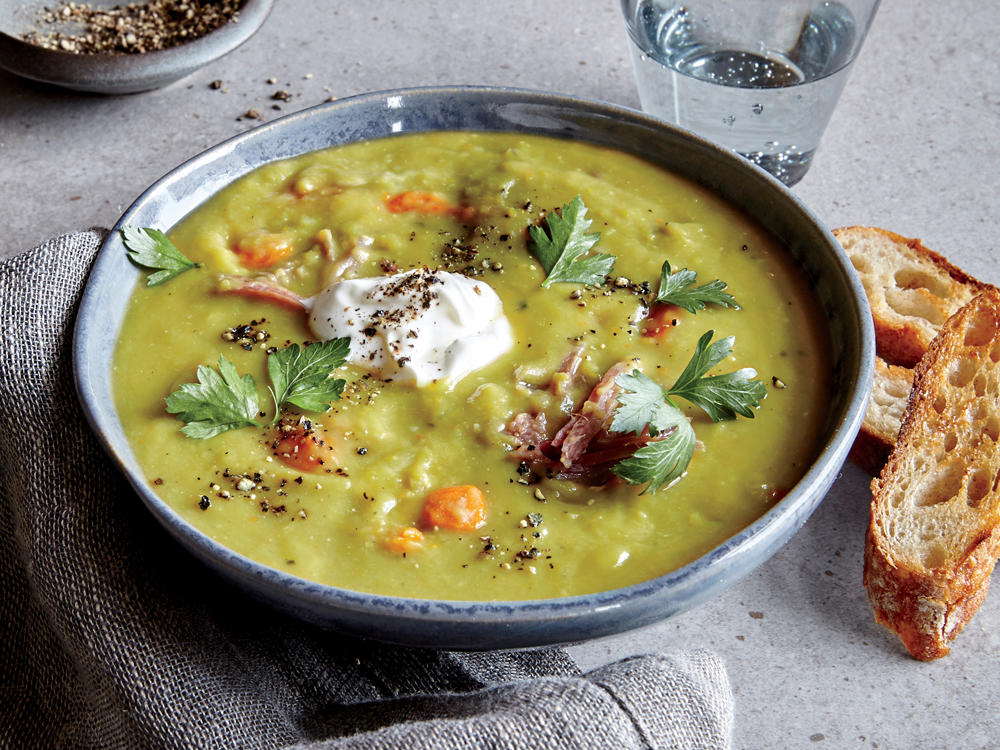

SPLIT PEA SOUP
Western Dish (Canada)

Takes 3 hours
Makes 6 servings
MAIN DISH
Ingredients
- 2 1/4 cups dried split peas
- 2 quarts cold water
- 1 1/2 pounds ham bone
- 2 onions, thinly sliced
- 1/2 teaspoon salt
- 1/4 teaspoon ground black pepper
- 1 pinch dried marjoram
- 3 stalks celery, chopped
- 3 carrots, chopped
- 1 potato, diced
Instruction
- 1. In a large stock pot, cover peas with 2 quarts cold water and soak overnight. If you need a faster method, simmer the peas gently for 2 minutes, and then soak for l hour.
- 2. Once peas are soaked, add ham bone, onion, salt, pepper and marjoram. Cover, bring to boil and then simmer for 1 1/2 hours, stirring occasionally.
- 3. Remove bone; cut off meat, dice and return meat to soup. Add celery, carrots and potatoes. Cook slowly, uncovered for 30 to 40 minutes, or until vegetables are tender.
SOURCE : www.allrecipes.com
Add to Cart
want to try this recipe? order ingredients now!